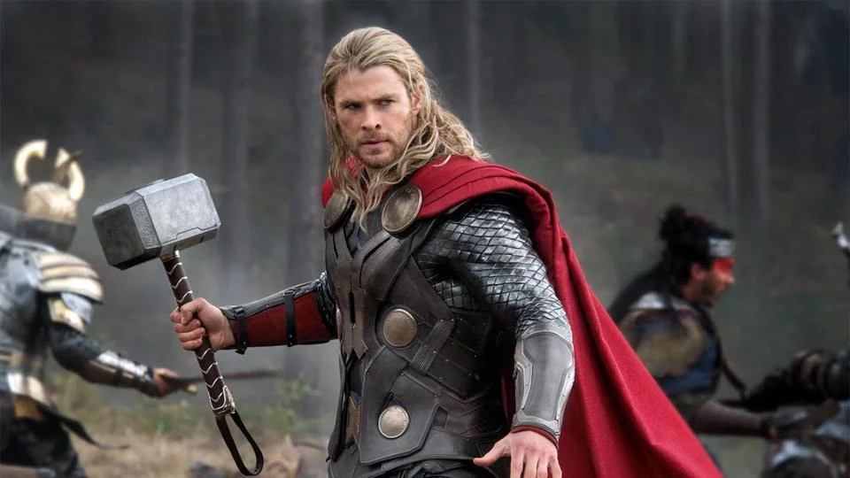
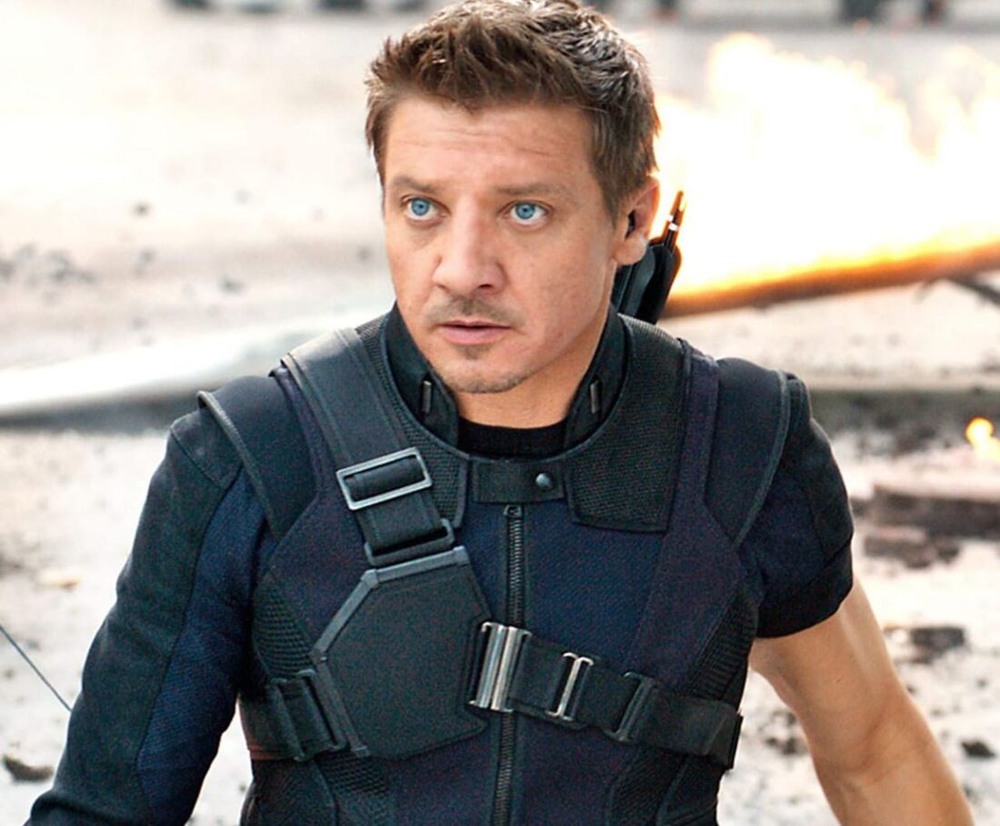
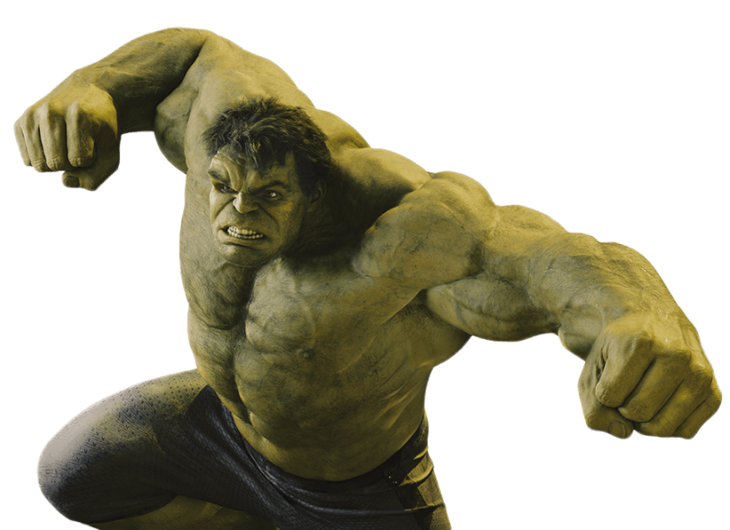
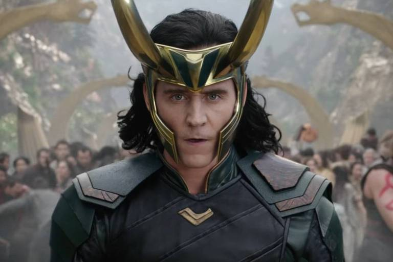

| Imagem do Personagem | Nome do Personagem | Nome do Ator/Atriz | Descrição |
|---|---|---|---|
|
Homem de Ferro | Robert Downey Jr. | Bilionário e inventor que usa uma armadura de alta tecnologia para combater o crime e proteger o mundo. |
|
Capitão América | Chris Evans | Um super-soldado da Segunda Guerra Mundial com força e agilidade aprimoradas, e um escudo indestrutível. |
|  | Thor | Chris Hemsworth | O deus do trovão de Asgard, possuidor do martelo Mjolnir, e com habilidades sobre-humanas. |
|
Viúva Negra | Scarlett Johansson | Uma espiã altamente treinada com habilidades em combate corpo a corpo e uma vasta gama de gadgets. |
|  | Gavião Arqueiro | Jeremy Renner | Um mestre arqueiro com habilidades excepcionais em tiro com arco e flecha. |
|  | Hulk | Mark Ruffalo | Cientista que, ao ser exposto a raios gama, se transforma em um monstro super forte e de pele verde quando fica com raiva. |
|  | Loki | Thomas William Hiddleston | Loki é o principal antagonista, buscando dominar a Terra com a ajuda do Tesseract e do exército Chitauri. Seu comportamento astuto e manipulador desafia os heróis, criando uma intensa batalha pelo controle do planeta. |
|
Nick Fury | Samuel L. Jackson | Diretor da S.H.I.E.L.D., responsável por recrutar os Vingadores. É um estrategista e líder experiente, conhecido por sua habilidade em coordenar operações secretas e reunir equipes de heróis. |
Veja o trailer oficial de "Os Vingadores" no YouTube:
Assistir TrailerClique aqui para se cadastrar e receber informações sobre lançamentos e novidades.